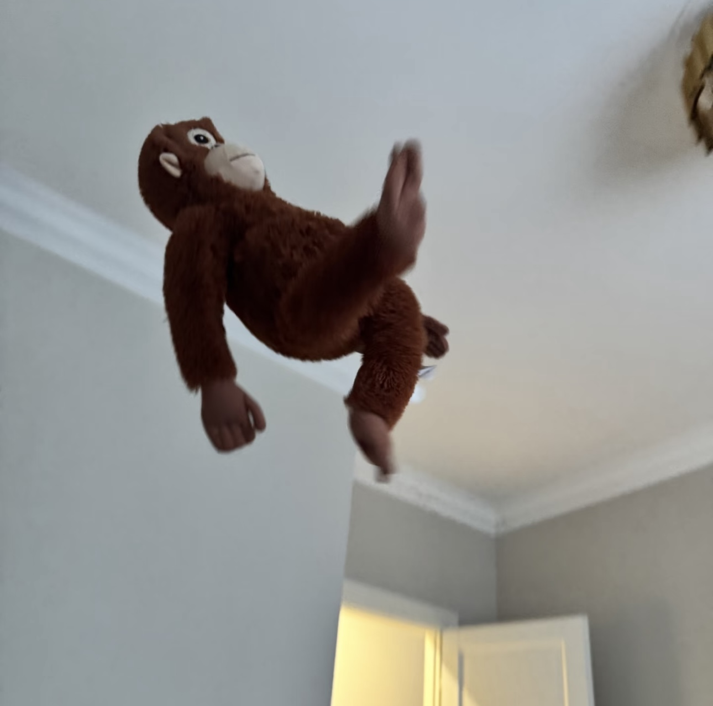
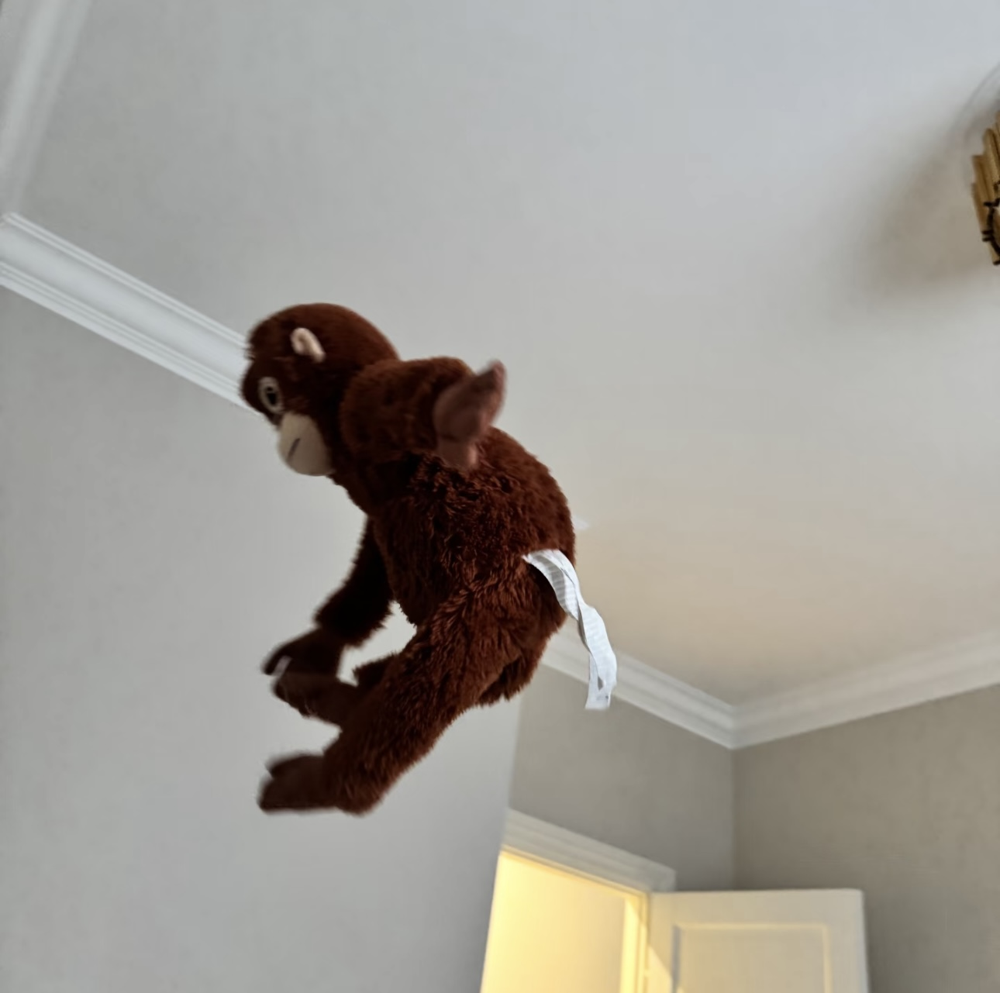
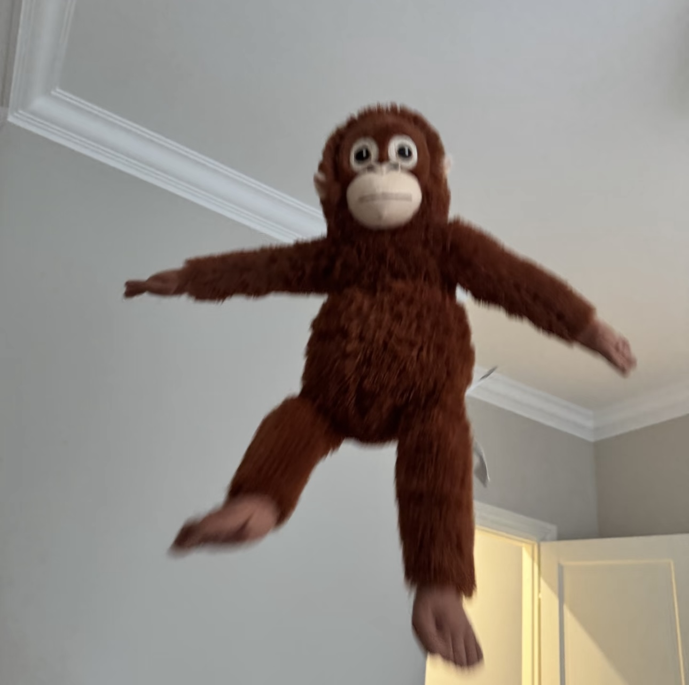

“The various forms of education or ‘normalization’ imposed upon an individual consist in making him or her change points of subjectification, always moving towards a higher, nobler one in closer conformity with the supposed ideal. Then from the point of subjectification issues a subject of enunciation, as a function of a mental reality determined by that point. Then from the subject of enunciation issues a subject of the statement, in other words, a subject bound to statements in conformity with a dominant reality.”
Once upon a time, on a faraway mountain, a magic stone split open and gave birth to a lively monkey. He became king of his fellow monkeys and dreamed of living forever.
He could ride clouds, change shapes, and wield a golden staff. He is proud and bold.
His tricks and pride got him in trouble with the mighty gods above. He flipped and flew and fought.
After learning his lesson, the Monkey King found a new purpose. He helped a kind monk on a long, brave journey to the West. Through courage and kindness, he became a true hero at last.
